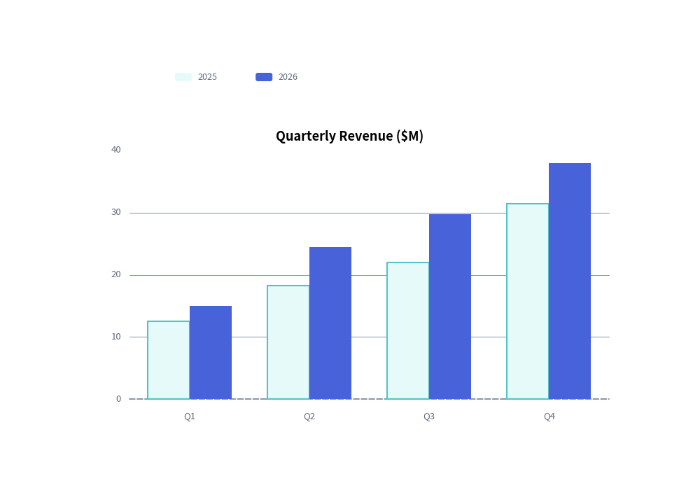

Charts Overview
The drawlib.charts module provides a declarative, pure-Python data visualization engine for comparative, statistical, relational, and project schedule charts.
1. Why Pure-Python Charts in Drawlib?
Unlike traditional Python visualization libraries (such as Matplotlib, Seaborn, or Plotly) that generate isolated image files or web-only canvases, Drawlib charts are first-class vector canvas elements:
- Seamless Canvas Coexistence: Charts can share the same canvas with architecture schemas, callout bubbles, and icons.
- Deterministic Layouts: All margins, tick spaces, and plot boxes are mathematically computed from explicit canvas dimensions (
width,height). - Consistent Visual Theming & Style Presence: Charts follow the "style-as-presence" philosophy. If an element has a style, it is drawn; if omitted (
None), no fallback element or unwanted default grid/background is rendered. Legends are decoupled and rendered explicitly viachart.draw_legend(...).

2. The Seven Chart Families
Drawlib organizes charts into seven specialized submodules under drawlib.charts:
| Module | Primary Class | Best Suited For |
|---|---|---|
drawlib.charts.bar |
BarChart |
Categorical comparisons (vertical, horizontal, grouped, stacked). |
drawlib.charts.line |
LineChart |
Continuous metrics and trends over time (linear or spline smoothed). |
drawlib.charts.area |
AreaChart |
Cumulative volume and part-to-whole trends over time. |
drawlib.charts.pie |
PieChart |
Proportional distributions, donut charts, and center KPI badges. |
drawlib.charts.radar |
RadarChart |
Multi-attribute evaluation, skill matrices, and spiderweb plots. |
drawlib.charts.scatter |
ScatterChart |
2D correlations, cluster distributions, and 3D bubble plots. |
drawlib.charts.gantt |
GanttChart |
Project roadmaps, phase tasks, milestones, and dependency arrows. |
3. Universal Chart Architecture
Every chart in Drawlib follows a consistent lifecycle and coordinate contract:
1. Dimension Instantiation & Mandatory Anchor
Specify category labels and a mandatory axis_line_style (the structural anchor) during initialization:
chart = BarChart(
categories=["US", "EU", "APAC"],
axis_line_style=Styles.Primary,
axis_text_style=Styles.Black,
grid_style=Styles.MutedLight,
width=90,
height=50,
title="Regional Distribution",
title_style=Styles.BlackBold,
)
2. Adding Data Series
Add data series directly with explicit styles:
chart.add_series("Allocated", [120, 180, 240], style=Styles.PrimaryFlat)
chart.add_series("Available", [90, 150, 210], style=Styles.SecondaryFlat)
3. Rendering via Bottom-Left Anchor & Decoupled Legend
All charts are anchored by their bottom-left corner via draw(xy=(x, y)). Legends are rendered independently wherever desired via draw_legend(xy=(x, y), text_style=...):
chart.draw(xy=(15, 10))
chart.draw_legend(xy=(85, 50), text_style=Styles.Black)